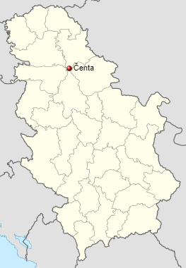

The first mention of Čenta dates from 1549, in a Turkish notebook, about the description of Szeged's sandjak. At that time, 22 households (by first and last name) and Voja kaluđer were recorded. Almost all the time of the Turkish rule over today's Banat, Čenta was inhabited, although it is not mentioned in the Peć Katistig either in 1660 or 1666. At that time, only the settlement of Ječin, northeast of today's village, was recorded.
Ječín was inhabited at the time of the expulsion of the Turks from Banat, in 1717, when there were 13 homes in the village and Pope Petar. Part of Ječina moved to Čenta, where Pope Petar was buried, and his monument is preserved, near the Old Church, to this day. On Marcy's map of Banat from 1723/25. Čenta (Črenta) was recorded as an abandoned village, but already in 1727, 22 households were recorded, so it is likely that it was inhabited in 1723 as well, but the population dispersed before the enumerators.
Entering the military system, Chenta received the Germanized name Leopoldsdorf (1753-1888), which never caught on among the people. That foreign name "Leopoldova" (abbreviated) was named after the Austrian Emperor Leopold of Habsburg. In 1764, "Leopoldovo" was an Orthodox parish in the Protoprespriate of Bečkerek.
In 1797, when the Orthodox clergy of the Diocese of Timișoara were listed, there were four priests in Leopoldovo. They were priests from Paros, Pope Marko Nikolajević (handwritten 1762), Pope Jevtimije Drakulić (1789), Pope Avram Popović (1793) and Deacon Nikolaj Nikolajević.
Chenta suffered a lot during the invasion of the Turks in 1736/37. year, so of the previous 22 homes, only 7 remained. The main cause of the decrease in the number of inhabitants was the plague. There is a preserved list of these households by name. According to the census from 1748, Chenta has 58 homes. In 1750/53. the village became part of the Banat Land Militia, and later belonged to the 12th German-Banat Regiment, until 1873, when the Military Border was abolished, and Čenta belonged to Toronto County. In 1774, the imperial auditor Erler stated that the border settlement of Leopoldova, predominantly inhabited by Serbs. The name of the village probably comes from the old Slavic word "Chantra" (bag), because in the Middle Ages the village was surrounded by ponds and swamps, so for most of the years it was practically on an island, and the inhabitants of that village were hidden like in a bag, from unwanted passers-by and tax collectors. After the abolition of the Banat military border, the village became part of the Perle administrative section, in the Toronto County.
According to a Serbian source from 1905, Čenta is a large municipality in the Antalfalva (Kovačići) political district. At that time, 2,920 inhabitants lived in the town in 545 homes. Serbs are in a huge majority, there are 2851 Orthodox souls (or 98%), with 512 houses. Of the Serbian public buildings in Čenta, the Orthodox church and five communal schools are mentioned. At that time, there was a post office and a telephone, and the telegraph was in neighboring Perlez.
Austrian Major General Jovan Branovački was born in Čenta in 1754. On May 1, 1788, he became Oberleitant of the Serbian-Wallachian Regiment. He died in Mutnik on August 31, 1816. His short biography was compiled in 1856 by the parish priest of Cenca, Georgije Šupica
According to a newspaper article, the people of Cenč helped Karađorđe's uprising by bringing a djebana, and he gave them a silver bell as a sign of gratitude.

In Stari Selo, there was a church, built in 1743, made of wattle and daub. The church was demolished and rebuilt in 1991. The legal parish title in the place was founded in 1746, and the matricula were not all registered immediately. The register of baptisms is from 1746, the register of marriages is from 1753, and the register of deaths is from 1779. The new church was built in the current center of the village in 1802. The iconostasis in the church was made by the icon painter from Bečkerek, Georgije Popović, in 1809-1811. years. At the beginning of the 20th century, the gate was fenced with slats.
In 1905, there were two parishes in Čenta, of the third and fourth pay classes, in which priests were appointed: priest Svetislav Popović, a native of Bačko Feldvarac, who has been there for six years, and priest Svetislav Jovanović, a chaplain, a native of Novi Sad. There is no parish house there, and two parish sessions are from 39 kj. country.The altar, bells and the entire building have been under state protection since 1974. The church celebrated its two hundredth anniversary in 2002. In 1905, there was a Serbian Orthodox cemetery with the oldest monument from 1743.

The school is located in two buildings, built in 1892. In one building there are I and II classes - each in each "hall", and in the other building III and IV classes - they are together in the same "hall". The teaching staff in 1905 consisted of: teachers Milan Pechenović and Milan Stejić, as well as teacher Vjera Radovančev. That year, 202 students (out of 376 enrolled) attended regular classes, and 60 older students (out of 123 enrolled) went to Sunday school.
Click picture for more info.
2,448 adults live in the village of Čenta, and the average age of the population is 39.2 years (38.1 for men and 40.3 for women). There are 960 households in the settlement, and the average number of members per household is 3.25.